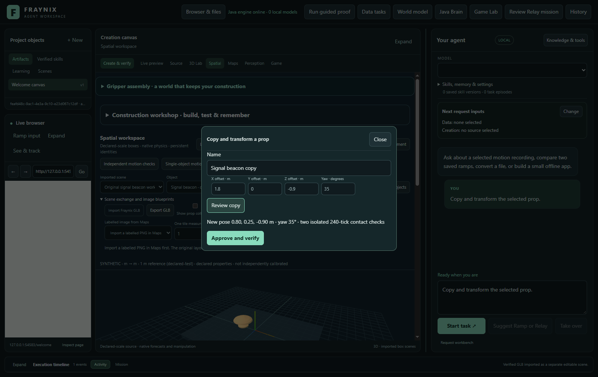
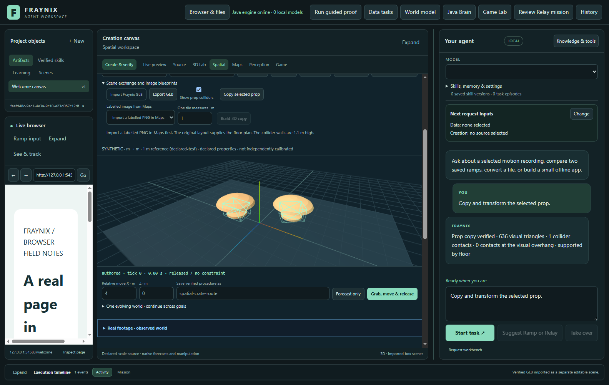

Copy a detailed prop with its own collider
Import a Blender prop as a detailed triangle surface with a separate box collider. Use Chat to review a transformed copy, verify contacts in two native worlds, and return it to Blender.

The local agent shows the target pose and both native collision checks before approval

Two rendered props with their box colliders and the retained contact verdict
System files
Open source